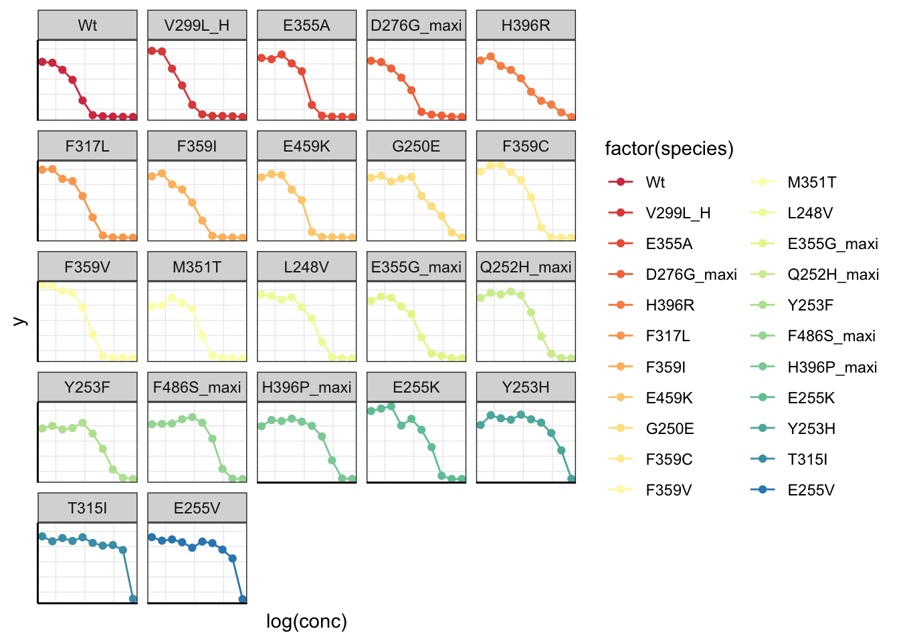

Last updated: 2020-05-19
Checks: 6 1
Knit directory: duplex_sequencing_screen/
This reproducible R Markdown analysis was created with workflowr (version 1.6.2). The Checks tab describes the reproducibility checks that were applied when the results were created. The Past versions tab lists the development history.
The R Markdown is untracked by Git. To know which version of the R Markdown file created these results, you’ll want to first commit it to the Git repo. If you’re still working on the analysis, you can ignore this warning. When you’re finished, you can run wflow_publish to commit the R Markdown file and build the HTML.
Great job! The global environment was empty. Objects defined in the global environment can affect the analysis in your R Markdown file in unknown ways. For reproduciblity it’s best to always run the code in an empty environment.
The command set.seed(20200402) was run prior to running the code in the R Markdown file. Setting a seed ensures that any results that rely on randomness, e.g. subsampling or permutations, are reproducible.
Great job! Recording the operating system, R version, and package versions is critical for reproducibility.
Nice! There were no cached chunks for this analysis, so you can be confident that you successfully produced the results during this run.
Great job! Using relative paths to the files within your workflowr project makes it easier to run your code on other machines.
Great! You are using Git for version control. Tracking code development and connecting the code version to the results is critical for reproducibility.
The results in this page were generated with repository version 19a9a02. See the Past versions tab to see a history of the changes made to the R Markdown and HTML files.
Note that you need to be careful to ensure that all relevant files for the analysis have been committed to Git prior to generating the results (you can use wflow_publish or wflow_git_commit). workflowr only checks the R Markdown file, but you know if there are other scripts or data files that it depends on. Below is the status of the Git repository when the results were generated:
Ignored files:
Ignored: .Rhistory
Ignored: .Rproj.user/
Untracked files:
Untracked: analysis/multinomial_sims.Rmd
Untracked: data/Combined_data_frame_IC_Mutprob_abundance.csv
Untracked: data/IC50HeatMap.csv
Untracked: data/Twinstrand/
Untracked: data/gfpenrichmentdata.csv
Untracked: data/heatmap_concat_data.csv
Untracked: output/archive/
Untracked: output/bmes_abstract_51220.pdf
Untracked: output/clinicalabundancepredictions_BMES_abstract_51320.pdf
Untracked: output/clinicalabundancepredictions_BMES_abstract_52020.pdf
Untracked: output/grant_fig.pdf
Untracked: output/grant_fig_v2.pdf
Untracked: output/grant_fig_v2updated.pdf
Untracked: output/ic50data_all_conc.csv
Untracked: shinyapp/
Unstaged changes:
Modified: analysis/4_7_20_update.Rmd
Modified: analysis/clinical_abundance_predictions.Rmd
Modified: analysis/misc.Rmd
Modified: analysis/nonlinear_growth_analysis.Rmd
Modified: analysis/spikeins_depthofcoverages.Rmd
Deleted: data/README.md
Modified: output/twinstrand_maf_merge.csv
Modified: output/twinstrand_simple_melt_merge.csv
Note that any generated files, e.g. HTML, png, CSS, etc., are not included in this status report because it is ok for generated content to have uncommitted changes.
There are no past versions. Publish this analysis with wflow_publish() to start tracking its development.
# rm(list=ls())
library("plotly")Loading required package: ggplot2
Attaching package: 'plotly'The following object is masked from 'package:ggplot2':
last_plotThe following object is masked from 'package:stats':
filterThe following object is masked from 'package:graphics':
layoutlibrary("deSolve")
library("dplyr")
Attaching package: 'dplyr'The following objects are masked from 'package:stats':
filter, lagThe following objects are masked from 'package:base':
intersect, setdiff, setequal, unionlibrary("ggplot2")
library("reshape2")
library("drc")Loading required package: MASS
Attaching package: 'MASS'The following object is masked from 'package:dplyr':
selectThe following object is masked from 'package:plotly':
select
'drc' has been loaded.Please cite R and 'drc' if used for a publication,for references type 'citation()' and 'citation('drc')'.
Attaching package: 'drc'The following objects are masked from 'package:stats':
gaussian, getInitiallibrary(RColorBrewer)
library(knitr)
library(tictoc)
library(workflowr)This is workflowr version 1.6.2
Run ?workflowr for help getting startedlibrary(VennDiagram)Loading required package: gridLoading required package: futile.loggerlibrary(dplyr)
library(foreach)
library(doParallel)Loading required package: iteratorsLoading required package: parallellibrary(ggplot2)
library(reshape2)
library(RColorBrewer)
library(devtools)Loading required package: usethislibrary(ggsignif)
######################Cleanup for GGPlot2#########################################
cleanup=theme_bw() +
theme(plot.title = element_text(hjust=.5),
panel.grid.major = element_blank(),
panel.grid.major.y = element_blank(),
panel.background = element_blank(),
axis.line = element_line(color = "black"))###Importing data + 4 parameter logistic
#Deciding not to use nls() because it's a pain in the ...
#https://www.youtube.com/watch?v=aXpJE7IGiPY this has a nice overview of curve fitting
####Getting effect of drug on growth rate####
# ic50data=read.csv("../data/heatmap_concat_data.csv",header = T,stringsAsFactors = F)
ic50data=read.csv("data/heatmap_concat_data.csv",header = T,stringsAsFactors = F)
ic50data=ic50data[c(1:10),]
#This is me manually normalizing T315I. Turns out the DMSO values for T315I were very high. Therefore, I'm normalizing the baseline values from 0.85 to 1
ic50data[,31]=ic50data[,31]/0.85
ic50data_long=melt(ic50data,id.vars = "conc",variable.name = "species",value.name = "y")
#Removing useless mutants (for example keeping only maxipreps and removing low growth rate mutants)
ic50data_long=ic50data_long%>%filter(species%in%c("Wt","V299L_H","E355A","D276G_maxi","H396R","F317L","F359I","E459K","G250E","F359C","F359V","M351T","L248V","E355G_maxi","Q252H_maxi","Y253F","F486S_maxi","H396P_maxi","E255K","Y253H","T315I","E255V"))
#Plotting the dose response curves that are not off of the model
getPalette = colorRampPalette(brewer.pal(9, "Spectral"))
ggplot(ic50data_long,aes(x=log(conc),y=y,color=factor(species)))+
facet_wrap(~factor(species))+
geom_line()+
geom_point()+
cleanup+
scale_color_manual(values = getPalette(length(unique(ic50data_long$species))))+
theme(axis.text = element_blank(),
axis.ticks = element_blank())
#Plotting these another way:
#These plots show that the most fit mutant at low dose wasn't necessarily the most fit mutant at high doses. After we do the 4 parameter logistic, we can know if this is actually true
ggplot(ic50data_long,aes(x=species,y=y))+
facet_wrap(~factor(conc))+
geom_col(aes(fill=factor(species)))+
cleanup+
scale_fill_manual(values = getPalette(length(unique(ic50data_long$species))))+
theme(axis.text = element_blank(),
axis.ticks = element_blank())########Four parameter logistic########
#Reference: https://journals.plos.org/plosone/article/file?type=supplementary&id=info:doi/10.1371/journal.pone.0146021.s001
#In short: For each dose in each species, get the response
#
# rm(list=ls())
ic50data_long_model=data.frame()
for (species_curr in sort(unique(ic50data_long$species))){
ic50data_species_specific=ic50data_long%>%filter(species==species_curr)
x=ic50data_species_specific$conc
y=ic50data_species_specific$y
#Next: Appproximating Response from dose (inverse of the prediction)
#3 param model (LL.3) is just the 4 param with the lower limit as 0. In the 3-param model, I set the upper limit as 1. Therefore, the model is only calculating the slope and the hill coefficient.
# c=lower limit
# d=upper limit
ic50.ll4=drm(y~conc,data=ic50data_long%>%filter(species==species_curr),fct=LL.3(fixed=c(NA,1,NA)))
b=coef(ic50.ll4)[1]
c=0
d=1
e=coef(ic50.ll4)[2]
# ic50.ll4=drm(y~conc,data=ic50data_long%>%filter(species==species_curr),fct=LL.4())
# plot(ic50.ll4,broken=T)
# b=coef(ic50.ll4)[1]
# c=coef(ic50.ll4)[2]
# d=coef(ic50.ll4)[3]
# e=coef(ic50.ll4)[4]
#Manual way of getting predictions:
# xval=sort(unique(ic50data_long$conc)) #this is your input
# prediction=c+((d-c)/(1+exp(b*(log(xval)-log(e)))))
#Faster way:
ic50data_species_specific=ic50data_species_specific%>%group_by(conc)%>%mutate(y_model=c+((d-c)/(1+exp(b*(log(conc)-log(e))))))
ic50data_species_specific=data.frame(ic50data_species_specific) #idk why I have to end up doing this
ic50data_long_model=rbind(ic50data_long_model,ic50data_species_specific)
}
ic50data_long=ic50data_long_model
#In the next step, I'm ordering mutants by decreasing resposne to the 625nM dose. Then I use this to change the levels of the species factor from more to less resistant. This helps with ggplot because now I can color the mutants with decreasing resistance
# ic50data_long$y_model=ic50data_long$y #troubleshooting
ic50data_long_625=ic50data_long%>%filter(conc==.625)
ic50data_long$species=factor(ic50data_long$species,levels = as.character(ic50data_long_625$species[order((ic50data_long_625$y_model),decreasing = T)]))
getPalette = colorRampPalette(brewer.pal(9, "Spectral"))
a=ggplot(ic50data_long,aes(x=log(conc),color=factor(species)))+
facet_wrap(~factor(species))+
geom_line(aes(y=y_model))+
geom_point(aes(y=y))+
cleanup+
scale_color_manual(values = getPalette(length(unique(ic50data_long$species))))+
theme(axis.text = element_blank(),
axis.ticks = element_blank())
ggplotly(a)###Presenting all IC50s on the same plot for Comps
getPalette = colorRampPalette(brewer.pal(9, "Spectral"))
a=ggplot(ic50data_long,aes(x=log(conc),color=factor(species)))+
# facet_wrap(~factor(species))+
geom_line(aes(y=y_model))+
# geom_point(aes(y=y))+
cleanup+
scale_color_manual(values = getPalette(length(unique(ic50data_long$species))))+
theme(axis.text = element_blank(),
axis.ticks = element_blank())
# ggsave("allic50smixed_forcomps.pdf",width=6,height=4,useDingbats=F)
ggplotly(a)####
x=ggplot(ic50data_long,aes(x=species,y=y_model))+
facet_wrap(~factor(conc))+
geom_col(aes(fill=factor(species)))+
cleanup+
scale_fill_manual(values = getPalette(length(unique(ic50data_long$species))))+
theme(axis.text = element_blank(),
axis.ticks = element_blank())
ggplotly(x)#Possible to appproximating dose from response (inverse of the prediction)
# yval=0.5
# prediction_inverse=((e^b)*(yval-d)/(c-b))^(1/b)
#More things to do with the 4 parameter logistic
#Plot the 95% confidence interval of exponential growth given that the a parameter depends on the IC50s used in the model
#Limit the lower limit of the model to 0 and the upper limit to 1
#The only weak thing about this 3-parameter model is that when the max y-values are below 1, then it has a tough time fitting the model. Values above 1 (DMSO didn't grow out as much) don't matter.1:1000 mixture in a total of 20M cells
# rm(list=ls())
# growthrate_nodrug=1.1 ##1.1 means a 15 hour doubling time
growthrate_nodrug=1.4 ##1.4 means a 12 hour doubling time
t=0:8
# ic50data_long$species=factor(ic50data_long$species,ordered = T)
# ic50data=dcast(data = ic50data_long,conc~species)
#Ideally, we would fit a 4 parameter logistic to this and then get the predicted 625 values
# x0=c(15000000,15000,15000,15000,15000,15000,15000,15000,15000,15000,15000,15000,15000,15000,15000,15000,15000,15000,15000,39*15000,56*15000,15000)
# trying out 1:10,000
x0=c(75000000,15000,15000,15000,15000,15000,15000,15000,15000,15000,15000,15000,15000,15000,15000,15000,15000,15000,15000,39*15000,56*15000,15000)
sol_comb_doses=data.frame()
# for(j in 1:length(ic50data[,1])){
for(dose in sort(unique(ic50data_long$conc))){
#Grabbing net growth rate at desired concentration
ic50data_specificdose=ic50data_long%>%filter(conc==dose)
ic50data_specificdose$drugeffect=-log(ic50data_specificdose$y_model)/3
ic50data_specificdose$growthrate_net=growthrate_nodrug-ic50data_specificdose$drugeffect
##Differential equation function
cgrowth=function(times,y,params){
dN.dt=ic50data_specificdose$growthrate_net[i]*y[1]
return(list(dN.dt))
}
sol_comb=data.frame()
for(i in 1:length(ic50data_specificdose[,1])){
sol=ode(y=x0[i],times=t,func=cgrowth,parms=growthrate_net[i])
sol_df=data.frame(sol)
sol_df$species=ic50data_specificdose$species[i]
# colnames(growthrate_net[i])
sol_comb=rbind(sol_comb,data.frame(sol_df))
}
colnames(sol_comb)[colnames(sol_comb)=="X1"]="count"
# sol_comb$dose=ic50data$conc[j]
sol_comb$dose=dose
sol_comb_doses=rbind(sol_comb_doses,sol_comb)
}
#Plotting total # of cells
getPalette = colorRampPalette(brewer.pal(9, "Spectral"))
#Wt grows unless the drug concentration is like 625nM
ggplot(data=sol_comb_doses,aes(y=count,x=time,color=factor(species)))+geom_line()+facet_wrap(~dose)+cleanup+scale_color_manual(values = getPalette(length(unique(sol_comb_doses$species))))ggplot(data=sol_comb_doses,aes(time,count))+
geom_col(aes(fill=species))+
facet_wrap(~dose)+
cleanup+
scale_fill_manual(values = getPalette(length(unique(sol_comb_doses$species))))#Log scale shows that other mutants are actually growing too
ggplot(data=sol_comb_doses,aes(y=log(count),x=time,color=factor(species)))+geom_line()+facet_wrap(~dose)+cleanup+scale_color_manual(values = getPalette(length(unique(sol_comb_doses$species))))sol_comb_doses=sol_comb_doses%>%group_by(dose,time)%>%mutate(total=sum(count))%>%group_by(dose,time,species)%>%mutate(proportion=count/total)
###Looking at the proportion of mutants given various starting doses
ggplot(data=sol_comb_doses,aes(time,proportion))+geom_col(aes(fill=species))+geom_line(aes(y=total/max(sol_comb_doses$total)))+scale_y_continuous(sec.axis = sec_axis(~.*max(sol_comb_doses$total), name = "Total Count"))+facet_wrap(~dose)+cleanup+scale_fill_manual(values = getPalette(length(unique(sol_comb_doses$species))))##Looking closely at just one plot
x=ggplot(data=sol_comb_doses%>%filter(dose==2.5),aes(time,proportion))+
geom_col(aes(fill=species))+
geom_line(aes(y=total/max(sol_comb_doses$total)))+
scale_y_continuous(sec.axis = sec_axis(~.*max(sol_comb_doses$total), name = "Total Count"))+facet_wrap(~dose)+
cleanup+
scale_fill_manual(values = getPalette(length(unique(sol_comb_doses$species))))
ggplotly(x) #Can also use this for coloring (doesn't require counting the 22 mutants)
# palette_Dark2 <- colorRampPalette(brewer.pal(14, "Set2"))
# +discrete_scale("fill", "manual", palette_Dark2)
# a=sol_comb_doses%>%filter(!species%in%c("F359Lmini","M244V","F359Lmaxi","V299L_L","V299L_H","V299L_H","D276G"))%>%group_by(dose,time)%>%summarize(min_coverage=100/min(proportion),min_coverage_sp=species[proportion==min(proportion)][1])
#Check that D275G is resistantLooking at a_obs vs a_net with start and stop times included
ic50data_long$drugeffect=-log(ic50data_long$y)/3
ic50data_long_625=ic50data_long%>%filter(conc==.625)
deltat=3
dose_current=.625
# start=3
coverage_tot=20000
datalist=list()
ct=1
data0=sol_comb_doses%>%filter(time==0,dose==dose_current)
data1=sol_comb_doses%>%filter(time==deltat,dose==dose_current)
library(dplyr)
for(coverage in seq(50,coverage_tot,by=50)){
dilutionfactor0=data0$total[1]/coverage
dilutionfactor1=data1$total[1]/coverage
downsampled0=dilutionfactor0*data.frame(rmultinom(5,coverage,data0$proportion))
downsampled0$species=data0$species
downsampled1=dilutionfactor1*data.frame(rmultinom(5,coverage,data1$proportion))
downsampled1$species=data1$species
###In this loop, besides the observed growth rates, I am also reporting initial and final counts for all mutants
downsampled0_count=downsampled0[,c(1:3)]/dilutionfactor0 #Could just make these easier/no calculations by not multiplying downsampled0 by dilution factor in the first case.
downsampled0_count$species=downsampled0$species
downsampled0_count=downsampled0_count%>%dplyr::select(countd0_1=X1,countd0_2=X2,countd0_3=X3,species)
downsampled1_count=downsampled1[,c(1:3)]/dilutionfactor1
downsampled1_count$species=downsampled1$species
# a=log(downsampled1[,c(1:3)]/downsampled0[,c(1:3)])/deltat
downsampled1_count=downsampled1_count%>%dplyr::select(countd1_1=X1,countd1_2=X2,countd1_3=X3,species)
k=log(downsampled1[,c(1:3)]/downsampled0[,c(1:3)])/deltat
k$species=downsampled1$species
k=merge(k,downsampled0_count,by="species")
k=merge(k,downsampled1_count,by="species")
k$coverage=coverage
k$ct=ct
k$a_measured=ic50data_long_625$drugeffect ##Note this is just for daignostics
datalist[[ct]]=k
ct=ct+1
}
k_pred=do.call(rbind,datalist)
k_pred$deltat=deltat
# k_pred_long2=melt(k_pred,id.vars = c("species","coverage","deltat","ct","a_measured"))
k_pred_long2=melt(k_pred,id.vars = c("species","coverage","deltat","ct","a_measured","countd0_1","countd0_2","countd0_3","countd1_1","countd1_2","countd1_3"))
##Drug effect, a:
k_pred_long2=k_pred_long2%>%mutate(a=growthrate_nodrug-value)
##Population proportion:
k_pred_long2=k_pred_long2%>%mutate(pop_prop=exp(-a*3))
#Mean coverage for that mutant at that time:
k_pred_long2=k_pred_long2%>%rowwise%>%mutate(countd0_mean=mean(c(countd0_1,countd0_2,countd0_3)),countd1_mean=mean(c(countd1_1,countd1_2,countd1_3)))
# k_pred_diag2=k_pred%>%filter(deltat==6,species=="G250E",coverage%in%c(5000,10000))
plotly=ggplot(k_pred_long2%>%filter(!species%in%"Wt",variable%in%"X1"),aes(x=factor(coverage),y=countd0_mean,color=species))+geom_point(size=.3)+facet_wrap(~species)+
scale_y_continuous(trans="log10")+
# scale_y_continuous(limits=c(0,1.5))+
geom_hline(yintercept=0.5)
ggplotly(plotly)Warning: Transformation introduced infinite values in continuous y-axis# a=k_pred_long2%>%filter(species=="T315I",variable=="X1")
# drug_effect=k_pred_long%>%filter(coverage%in%c(5000,10000),deltat==6,dose==.625)
# ggplot(drug_effect,x=ic50data_long_625$drugeffect)+geom_boxplot(aes(y=a,color=factor(species)))+
# facet_grid(~coverage)+
# geom_abline(slope=1,intercept = 0)+
# # scale_x_continuous(limits = c(-.5,1.5))+
# # scale_y_continuous(limits = c(-.5,1.5))+
# scale_color_manual(values = getPalette(length(unique(drug_effect$species))))+
# cleanup
# drug_effect=k_pred_long%>%filter(coverage%in%c(5000,10000),species%in%c("E355A","F359I","Wt","Y253H","E255K","T315I","E255V","G250E"),deltat==6,dose==.625)
# ggplot(drug_effect,x=ic50data_long_625$drugeffect)+geom_boxplot(aes(y=a,color=factor(species)))+
# facet_grid(~coverage)+
# geom_abline(slope = 1,intercept = 0)+
# # scale_x_continuous(limits = c(-.5,1.5))+
# # scale_y_continuous(limits = c(-.5,1.5))+
# scale_color_manual(values = getPalette(length(unique(drug_effect$species))))+
# cleanup
#
# point=data.frame(x=c(.1,.2,.3,.4,.5),y=c(.1,.2,.3,.4,.5))
# unique(k_pred_long2$deltat)
drug_effect=k_pred_long2%>%filter(coverage%in%c(2500,5000,10000,20000),deltat==3)
a=ggplot(drug_effect,aes(x=a_measured))+geom_boxplot(aes(y=a,color=factor(species)))+
# geom_point(aes(x=point$x,y=point$y))+
facet_grid(~coverage)+
geom_abline(slope=1,intercept = 0)+
# scale_x_continuous(limits = c(-.5,1.5))+
# scale_y_continuous(limits = c(-.5,1.5))+
scale_color_manual(values = getPalette(length(unique(drug_effect$species))))+
cleanup+
xlab("a_measured_ic50")+
ylab("a_measured_sequencing")
ggplotly(a)Warning: Removed 86 rows containing non-finite values (stat_boxplot). # ggplot()geom_point(aes(x=point$x,y=point$y))
# drugeffect$a_calc=a=k_pred_long2%>%filter(coverage==2500)
sessionInfo()R version 4.0.0 (2020-04-24)
Platform: x86_64-apple-darwin17.0 (64-bit)
Running under: macOS Catalina 10.15.4
Matrix products: default
BLAS: /Library/Frameworks/R.framework/Versions/4.0/Resources/lib/libRblas.dylib
LAPACK: /Library/Frameworks/R.framework/Versions/4.0/Resources/lib/libRlapack.dylib
locale:
[1] en_US.UTF-8/en_US.UTF-8/en_US.UTF-8/C/en_US.UTF-8/en_US.UTF-8
attached base packages:
[1] parallel grid stats graphics grDevices utils datasets
[8] methods base
other attached packages:
[1] ggsignif_0.6.0 devtools_2.3.0 usethis_1.6.1
[4] doParallel_1.0.15 iterators_1.0.12 foreach_1.5.0
[7] VennDiagram_1.6.20 futile.logger_1.4.3 workflowr_1.6.2
[10] tictoc_1.0 knitr_1.28 RColorBrewer_1.1-2
[13] drc_3.0-1 MASS_7.3-51.5 reshape2_1.4.4
[16] dplyr_0.8.5 deSolve_1.28 plotly_4.9.2.1
[19] ggplot2_3.3.0
loaded via a namespace (and not attached):
[1] fs_1.4.1 httr_1.4.1 rprojroot_1.3-2
[4] tools_4.0.0 backports_1.1.7 R6_2.4.1
[7] lazyeval_0.2.2 colorspace_1.4-1 withr_2.2.0
[10] prettyunits_1.1.1 tidyselect_1.1.0 processx_3.4.2
[13] curl_4.3 compiler_4.0.0 git2r_0.27.1
[16] cli_2.0.2 formatR_1.7 desc_1.2.0
[19] sandwich_2.5-1 labeling_0.3 scales_1.1.1
[22] mvtnorm_1.1-0 callr_3.4.3 stringr_1.4.0
[25] digest_0.6.25 foreign_0.8-78 rmarkdown_2.1
[28] rio_0.5.16 pkgconfig_2.0.3 htmltools_0.4.0
[31] sessioninfo_1.1.1 plotrix_3.7-8 htmlwidgets_1.5.1
[34] rlang_0.4.6 readxl_1.3.1 farver_2.0.3
[37] zoo_1.8-8 jsonlite_1.6.1 crosstalk_1.1.0.1
[40] gtools_3.8.2 zip_2.0.4 car_3.0-7
[43] magrittr_1.5 Matrix_1.2-18 Rcpp_1.0.4.6
[46] munsell_0.5.0 fansi_0.4.1 abind_1.4-5
[49] lifecycle_0.2.0 stringi_1.4.6 multcomp_1.4-13
[52] yaml_2.2.1 carData_3.0-3 pkgbuild_1.0.8
[55] plyr_1.8.6 promises_1.1.0 forcats_0.5.0
[58] crayon_1.3.4 lattice_0.20-41 haven_2.2.0
[61] splines_4.0.0 hms_0.5.3 ps_1.3.3
[64] pillar_1.4.4 pkgload_1.0.2 codetools_0.2-16
[67] futile.options_1.0.1 glue_1.4.1 evaluate_0.14
[70] remotes_2.1.1 lambda.r_1.2.4 data.table_1.12.8
[73] vctrs_0.3.0 httpuv_1.5.2 testthat_2.3.2
[76] cellranger_1.1.0 gtable_0.3.0 purrr_0.3.4
[79] tidyr_1.0.3 assertthat_0.2.1 xfun_0.13
[82] openxlsx_4.1.5 later_1.0.0 survival_3.1-12
[85] viridisLite_0.3.0 tibble_3.0.1 memoise_1.1.0
[88] TH.data_1.0-10 ellipsis_0.3.1